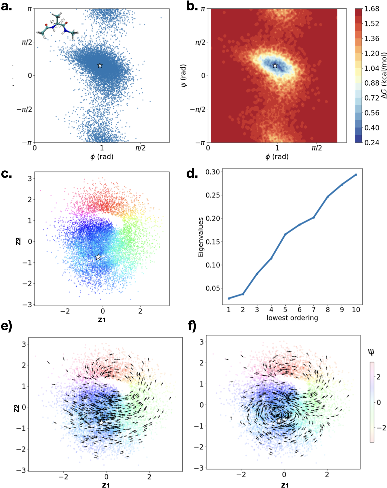
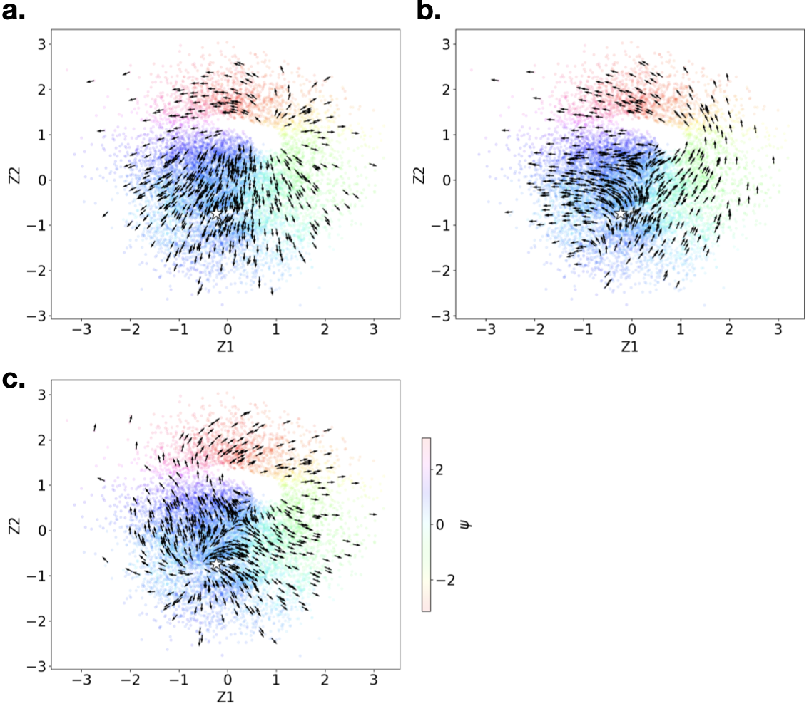

🧪 Tutorial 3: Alanine Dipeptide
Molecular Dynamics Real-World Data 66D → 2D 11,215 samples
Alanine Dipeptide is a widely-used benchmark in molecular dynamics (MD). The protein consists of 22 atoms (66-dimensional position data) governed by two principal dihedral angles φ and ψ. This tutorial demonstrates that Latent-XAI can recover intrinsic geometry from real-world, high-dimensional noisy data.
Scientific Background
The configuration space of Alanine Dipeptide is topologically a torus (parameterised by φ and ψ). Because a simple Gaussian-prior VAE cannot represent a torus, we restrict analysis to states where φ ∈ (0, 2) radians, reducing the topology to a circle.
The full dihedral angle space is a torus — topologically impossible to embed faithfully with a standard Gaussian prior VAE. By restricting to φ ∈ (0, 2), the topology becomes a circle, which the VAE can represent as a ring-shaped latent structure.
Data Preprocessing
import numpy as np
from sklearn.preprocessing import RobustScaler
# Load trajectory data (from Bittracher et al. 2018)
data = np.load("data/trajdata.npz")
coords = data["coords"] # (T, 22, 3) → reshape to (T, 66)
phi = data["phi"] # Ramachandran angle φ
psi = data["psi"] # Ramachandran angle ψ
# Restrict to φ ∈ (0, 2) — circular topology
mask = (phi > 0) & (phi < 2)
X, phi_sub, psi_sub = coords[mask].reshape(-1, 66), phi[mask], psi[mask]
print(f"Samples after filtering: {X.shape[0]}") # 11,215
# Normalise with RobustScaler (robust to MD outliers)
scaler = RobustScaler()
X_scaled = scaler.fit_transform(X)VAE Configuration
| Parameter | Value | Note |
|---|---|---|
| Input dim | 66 (22 atoms × 3) | Flattened 3D positions |
| Encoder | 3 layers, hidden=512, LeakyReLU | |
| Decoder | 3 layers, hidden=512, ELU | C¹ smooth |
| Latent dim | 2 | φ and ψ capture the DOF |
| Epochs | 1,000 | More epochs for high-D data |
| Learning rate | 1e-4 | |
| Batch size | 256 | |
| β (KL weight) | 2.0 | Stronger regularisation for noisy MD |
Latent-XAI Configuration
from latentxai import lxai
model = lxai(
decoder=decoder,
n_neighbors=30, # larger neighbourhood for 66D data
sigma=0.3,
principle_tangent_dims=2, # circle has 1 intrinsic dim; use 2 for robustness
n_components=10
)
model.fit(Z) # Z: encoded latent codes (N, 2)Results

Fig. 4 — Alanine Dipeptide analysis. (a) Ramachandran plot (φ, ψ) of original data. (b) Free energy surface ΔG — white star marks the single potential well. (c) 2D VAE latent space coloured by ψ — circular structure is recovered; the white star shows the energy minimum does not coincide with the densest region. (d) Connection Laplacian spectrum — spectral gap after 2 eigenvalues. (e) First eigenvector: rotational flow along the ψ direction. (f) Fifth eigenvector: spiral vector field localised near the energy minimum (white star).
Locating the Potential Well
The free energy well (white star in panels b, c, e, f) represents the most energetically stable configuration of the peptide. Crucially:
- In the latent space, the energy minimum does not correspond to the densest region — the encoder removes local geometry.
- The first eigenvector captures the global rotation (ψ direction).
- Subsequent eigenvectors (5th shown) produce saddle/spiral patterns near the well, capturing the deformation geometry of the energy minimum transition.

Fig. S2 — Alanine Dipeptide supplementary vector fields. (a) 2nd eigenvector: perpendicular to the rotation, capturing width. (b) 3rd eigenvector. (c) 4th eigenvector. All panels mark the energy minimum with a white star.
The encoder discards local geometry (the energy minimum is not at the densest latent point), but the decoder preserves it. Latent-XAI uses the decoder to re-expose this information through the saddle/spiral patterns in the higher eigenvectors.